<title>How Well Do Decision Models Know Geography?</title>
<link rel="preconnect" href="https://fonts.googleapis.com">
<link rel="preconnect" href="https://fonts.gstatic.com" crossorigin>
<link rel="stylesheet" href="https://fonts.googleapis.com/css2?family=IBM+Plex+Sans:wght@400;500;600&family=IBM+Plex+Mono:wght@400;500&family=Source+Serif+4:ital,opsz,wght@0,8..60,400;0,8..60,600;1,8..60,400&display=swap">
<style>
/* Layout: one text column (~68ch); figures and tables widen to 1100px. Model colours are fixed across every chart. */
:root {
  --bg: #fbfbfa;
  --fg: #1b1d21;
  --muted: #61666f;
  --rule: #dcdee2;
  --panel: #ffffff;
  --track: #eceef1;
  --claude: #a7abb3;
  --heat: #2f6f4f;
  --m-jev: #d0491c;
  --m-clef: #1f56d6;
  --m-flash: #5ea3f0;
  --m-laya: #8a4fd8;
  --sans: "IBM Plex Sans", "Helvetica Neue", Arial, sans-serif;
  --serif: "Source Serif 4", Georgia, "Times New Roman", serif;
  --mono: "IBM Plex Mono", ui-monospace, Menlo, monospace;
}
@media (prefers-color-scheme: dark) {
  :root:not([data-theme="light"]) {
    --bg: #121417; --fg: #e4e6ea; --muted: #a0a5ae; --rule: #2c3036; --panel: #1a1d21; --track: #24282e;
    --claude: #5d626b; --heat: #5fbf8c; --m-jev: #f07a4c; --m-clef: #6d95f5; --m-flash: #9cc8f7; --m-laya: #b38af0; color-scheme: dark;
  }
}
:root[data-theme="dark"] {
  --bg: #121417; --fg: #e4e6ea; --muted: #a0a5ae; --rule: #2c3036; --panel: #1a1d21; --track: #24282e;
  --claude: #5d626b; --heat: #5fbf8c; --m-jev: #f07a4c; --m-clef: #6d95f5; --m-flash: #9cc8f7; --m-laya: #b38af0; color-scheme: dark;
}
* { box-sizing: border-box; }
body { background: var(--bg); color: var(--fg); font-family: var(--serif); font-size: 1.075rem; line-height: 1.62; padding-inline: 16px; padding-block: 0 5rem; }
main { display: grid; }
main > * { width: 100%; max-width: 68ch; margin-inline: auto; }
main > .wide { max-width: 1100px; }
h1, h2, h3 { font-family: var(--sans); font-weight: 600; line-height: 1.15; text-wrap: balance; margin: 0; letter-spacing: -0.01em; }
h1 { font-size: clamp(2.1rem, 5vw, 3.1rem); }
h2 { font-size: 1.6rem; margin-top: 3.4rem; }
h3 { font-size: 1.15rem; margin-top: 2rem; }
p { margin-block: 1rem 0; }
a { color: var(--m-clef); }
a:focus-visible { outline: 2px solid var(--m-jev); outline-offset: 2px; }
code { font-family: var(--mono); font-size: 0.86em; }
small, .note { font-family: var(--sans); font-size: 0.82rem; color: var(--muted); }
.note { margin-top: 0.5rem; }
header { padding-top: 3.5rem; }
.byline { font-family: var(--sans); font-size: 0.9rem; color: var(--muted); margin-top: 0.9rem; }
.sw { display: inline-block; width: 0.7rem; height: 0.7rem; border-radius: 2px; margin-right: 0.4rem; vertical-align: 0; }

.tldr { margin-top: 2rem; padding: 1.1rem 1.3rem; background: var(--panel); border: 1px solid var(--rule); }
.tldr h2 { font-size: 0.85rem; text-transform: uppercase; letter-spacing: 0.08em; color: var(--muted); margin: 0; }
.tldr ul { margin: 0.6rem 0 0; padding-left: 1.1rem; }
.tldr li + li { margin-top: 0.45rem; }
ul { padding-left: 1.2rem; margin-block: 1rem 0; }
li + li { margin-top: 0.35rem; }

figure { margin: 1.4rem 0 0; min-width: 0; }
figure img { display: block; width: 100%; height: auto; background: #fff; border: 1px solid var(--rule); }
figcaption { font-family: var(--sans); font-size: 0.85rem; color: var(--muted); margin-top: 0.35rem; }
.grid2 { display: grid; grid-template-columns: repeat(auto-fit, minmax(290px, 1fr)); gap: 0.4rem 1.2rem; }
.grid2 figure { margin-top: 1rem; }

.tbl { overflow-x: auto; margin-top: 1.2rem; }
table { border-collapse: collapse; width: 100%; font-family: var(--sans); font-size: 0.86rem; font-variant-numeric: tabular-nums; }
th, td { padding: 0.42rem 0.55rem; text-align: left; border-bottom: 1px solid var(--rule); vertical-align: top; }
thead th { font-weight: 600; color: var(--muted); border-bottom: 1px solid var(--fg); font-size: 0.78rem; }
td + td, th + th { text-align: right; }
tr.base td, tr.tot td { color: var(--muted); }
tr.tot td { font-weight: 600; color: var(--fg); }
.heat td { text-align: center; background: color-mix(in srgb, var(--heat) calc(var(--s) * 38%), transparent); }
.heat td b { display: block; font-weight: 600; }
.heat td small { font-size: 0.72rem; }
.heat thead th { text-align: center; font-size: 0.74rem; min-width: 7.5rem; }
.heat tbody th { white-space: nowrap; font-weight: 500; text-align: left; }

.bars { margin-top: 1.3rem; display: grid; gap: 0.22rem; position: relative; }
.bar { display: grid; grid-template-columns: 13rem 1fr 3.6rem; gap: 0.6rem; align-items: center; font-family: var(--sans); font-size: 0.86rem; }
.bt { position: relative; height: 0.8rem; background: var(--track); }
.bf { position: absolute; inset: 0 auto 0 0; background: var(--claude); }
.bv { font-family: var(--mono); font-size: 0.8rem; text-align: right; }
.bar.dm .bl, .bar.dm .bv { font-weight: 600; }
.axis { display: grid; grid-template-columns: 13rem 1fr 3.6rem; gap: 0.6rem; font-family: var(--mono); font-size: 0.72rem; color: var(--muted); }
.axis .sc { position: relative; height: 1.1rem; }
.axis .sc span { position: absolute; transform: translateX(-50%); }
.baseline { position: absolute; top: 0; bottom: 0; width: 0; border-left: 1.5px dashed var(--muted); }
.basewrap { position: absolute; inset: 0 3.6rem 0 13.6rem; pointer-events: none; }
.basewrap span { position: absolute; top: -1.3rem; transform: translateX(-50%); font-family: var(--sans); font-size: 0.72rem; color: var(--muted); white-space: nowrap; }

.chart2 { display: grid; grid-template-columns: minmax(0, 380px) minmax(0, 1fr); gap: 1.5rem; align-items: start; margin-top: 1.2rem; }
svg { width: 100%; height: auto; display: block; }
svg .g { stroke: var(--rule); stroke-width: 1; }
svg .diag { stroke: var(--muted); stroke-dasharray: 4 4; }
svg .tk { fill: var(--muted); font-family: var(--mono); font-size: 10px; }
svg .ax { fill: var(--fg); font-family: var(--sans); font-size: 12px; }
svg .lbl { fill: var(--fg); font-family: var(--sans); font-size: 13px; }
svg .conn { stroke: var(--muted); stroke-width: 1.5; }
svg .hollow { fill: var(--bg); stroke-width: 2.5; }
.legend { display: flex; flex-wrap: wrap; gap: 0.3rem 1rem; font-family: var(--sans); font-size: 0.82rem; color: var(--muted); margin-top: 0.6rem; }
.legend i { display: inline-block; width: 0.75rem; height: 0.75rem; vertical-align: -0.1rem; margin-right: 0.3rem; border: 1px solid var(--rule); }
.prompt { font-family: var(--mono); font-size: 0.82rem; background: var(--panel); border: 1px solid var(--rule); padding: 0.8rem 1rem; margin-top: 1rem; overflow-x: auto; white-space: pre-wrap; line-height: 1.5; }
.stack { display: grid; gap: 0.5rem; margin-top: 1.2rem; }
.stack svg { max-width: 640px; }
footer { margin-top: 4rem; padding-top: 1rem; border-top: 1px solid var(--rule); font-family: var(--sans); font-size: 0.82rem; color: var(--muted); }

@media (max-width: 680px) {
  .chart2 { grid-template-columns: minmax(0, 1fr); }
  .bar, .axis { grid-template-columns: 7.5rem 1fr 3.2rem; }
  .basewrap { inset: 0 3.2rem 0 8.1rem; }
}
</style>

<main>
<header>
  <h1>How well do decision models know geography?</h1>
  <p class="byline">October 2026 · Jev 1.13, Clef, Clef-flash, Laya · 16,200 points per map</p>
</header>

<!-- CONTENT START -->
<p>Decision models answer typed questions instead of generating text: a yes/no question returns a probability, a multiple-choice question returns a probability for every option. Jev (TypeSafe), Clef and Clef-flash (Cloudflare) and Laya (open weights) all work this way.</p>
<p>A popular eval for language models asks "Land or Water?" at every 2° of the globe and plots the answers as a map (<a href="https://outsidetext.substack.com/p/how-does-a-blind-model-see-the-earth">original post</a>; <a href="https://x.com/celestepoasts/status/2103232383139057950">results for 12 Claude models</a>). Decision models are a natural fit for it: the probability comes back directly. Jev maps have been <a href="https://x.com/arithmoquine/status/2103147890315325714">shown before</a>, without scores. This post scores four decision models on the same grid, with seven ways of asking, and checks what they know when given place names instead of coordinates.</p>

<section class="tldr">
  <h2>Summary</h2>
  <ul>
    <li><b>Land or water from coordinates:</b> Jev 84.1%, Clef 83.8%, Clef-flash 80.7%, Laya 29.0%. Answering "water" everywhere scores 71.0%. Jev is between Opus 4.5 and Sonnet 4.6 on the Claude chart.</li>
    <li><b>Names work better than numbers.</b> Given a city name, Jev and Clef name the continent 98–99% of the time. Given a coordinate, they get the continent right 92.2% (Jev) and 73.4% (Clef) of the time.</li>
    <li><b>Laya has almost no geography</b>, from coordinates or from names.</li>
    <li><b>Jev ranks best but its calibration depends on the question:</b> 77%–86% at a 0.5 cutoff across seven question types. Clef stays at 80%–84%.</li>
    <li><b>Countries:</b> Jev 75.3%, Clef 63.3%, Clef-flash 49.6% of land points. Keeping Jev's most confident half gives 96.5%.</li>
    <li><b>Jev is not deterministic:</b> 17 of 648 answers changed when the same requests were sent twice. Clef returned identical results.</li>
  </ul>
</section>

<h2>Setup</h2>
<p>Every model got the same 16,200 points (cell centres of a 2° grid) and the same questions. The coordinate is written as <code>35°S, 175°W</code>; this format beat signed decimals in a tuning run on a 10° grid. Up to 64 points go into one request, each as its own question; questions in a request are answered independently. The alternative is one point per request, with the coordinate as the whole state. Jev does equally well either way; both Clef models do better with one point per request. Results below use each model's better setting: Jev with the coordinate in the question, Clef and Clef-flash with the coordinate as the state. The one exception is the seven-ways table, where every model has the coordinate in the question.</p>
<div class="prompt">state:     "Locations on the surface of the Earth, given as latitude and longitude."
question:  choice  "If this location is over land, say 'Land'. If this location is over water,
                    say 'Water'. 35°S, 175°W"     options: Land, Water</div>
<p>Ground truth: the 1-km GLOBE land mask, ETOPO1 elevation, Natural Earth 1:50m countries. Accuracy is weighted by cos(latitude), as in the Claude chart. Laya ran on a Modal L4 GPU through its Python package; the others through their hosted APIs.</p>

<h2>Land or water</h2>
<figure class="wide"><figcaption>White = the model's P(Land) ≥ 0.5. Laya's panel is all white: its P(Land) stays between 0.57 and 0.67 everywhere, so every point is called land, and its 29.0% is simply the land share of the globe.</figcaption></figure>

<section class="wide">
  <div class="bars">
    <div class="basewrap"><span style="left:63.71%">all "water" = 71.0%</span><div class="baseline" style="left:63.71%"></div></div>
    <div class="bar "><span class="bl">Opus 5.5</span><span class="bt"><span class="bf" style="width:98.75%;"></span></span><span class="bv">99.0%</span></div><div class="bar "><span class="bl">Fable 5.1</span><span class="bt"><span class="bf" style="width:97.75%;"></span></span><span class="bv">98.2%</span></div><div class="bar "><span class="bl">Fable 5</span><span class="bt"><span class="bf" style="width:97.25%;"></span></span><span class="bv">97.8%</span></div><div class="bar "><span class="bl">Opus 5</span><span class="bt"><span class="bf" style="width:90.63%;"></span></span><span class="bv">92.5%</span></div><div class="bar "><span class="bl">Opus 4.8</span><span class="bt"><span class="bf" style="width:89.63%;"></span></span><span class="bv">91.7%</span></div><div class="bar "><span class="bl">Sonnet 5</span><span class="bt"><span class="bf" style="width:89.38%;"></span></span><span class="bv">91.5%</span></div><div class="bar "><span class="bl">Opus 4.6</span><span class="bt"><span class="bf" style="width:89.00%;"></span></span><span class="bv">91.2%</span></div><div class="bar "><span class="bl">Opus 4.7</span><span class="bt"><span class="bf" style="width:89.00%;"></span></span><span class="bv">91.2%</span></div><div class="bar "><span class="bl">Sonnet 4.6</span><span class="bt"><span class="bf" style="width:86.37%;"></span></span><span class="bv">89.1%</span></div><div class="bar dm"><span class="bl">Jev 1.13</span><span class="bt"><span class="bf" style="width:80.18%;background:var(--m-jev)"></span></span><span class="bv">84.1%</span></div><div class="bar dm"><span class="bl">Clef</span><span class="bt"><span class="bf" style="width:79.79%;background:var(--m-clef)"></span></span><span class="bv">83.8%</span></div><div class="bar "><span class="bl">Opus 4.5</span><span class="bt"><span class="bf" style="width:78.25%;"></span></span><span class="bv">82.6%</span></div><div class="bar "><span class="bl">Haiku 4.5</span><span class="bt"><span class="bf" style="width:76.62%;"></span></span><span class="bv">81.3%</span></div><div class="bar dm"><span class="bl">Clef-flash</span><span class="bt"><span class="bf" style="width:75.82%;background:var(--m-flash)"></span></span><span class="bv">80.7%</span></div><div class="bar "><span class="bl">Sonnet 4.5</span><span class="bt"><span class="bf" style="width:50.62%;"></span></span><span class="bv">60.5%</span></div><div class="bar dm"><span class="bl">Laya (says Land everywhere)</span><span class="bt"><span class="bf" style="width:11.29%;background:var(--m-laya)"></span></span><span class="bv">29.0%</span></div>
  </div>
  <div class="axis" aria-hidden="true"><span></span><div class="sc"><span style="left:0.0%">20</span><span style="left:25.0%">40</span><span style="left:50.0%">60</span><span style="left:75.0%">80</span><span style="left:100.0%">100</span></div><span></span></div>
  <p class="note">Land/water accuracy at 2°, area-weighted. Grey: Claude models, read from the published chart. Coloured: decision models, same prompt and grid, each in its better setting.</p>
</section>

<p>Accuracy at a fixed cutoff mixes two things: whether a model ranks land above water, and whether its probabilities are centred. AUC measures the ranking alone (0.5 = no signal, 1 = perfect): Jev 0.93, Clef 0.90, Clef-flash 0.84, Laya 0.69.</p>

<section class="wide">
  <div class="grid2"><figure>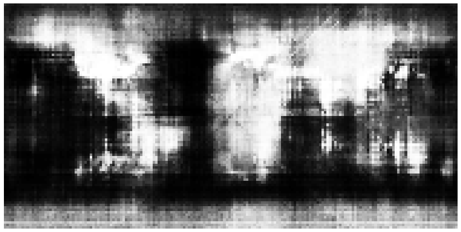<figcaption><i class="sw" style="background:var(--m-jev)"></i>Jev 1.13 · AUC 0.93 · coordinate in question</figcaption></figure><figure>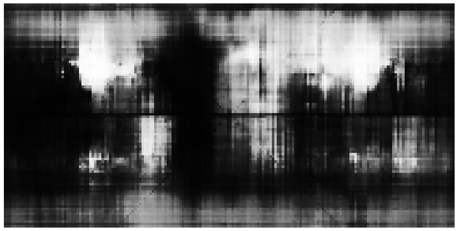<figcaption><i class="sw" style="background:var(--m-clef)"></i>Clef · AUC 0.90 · coordinate as state</figcaption></figure><figure>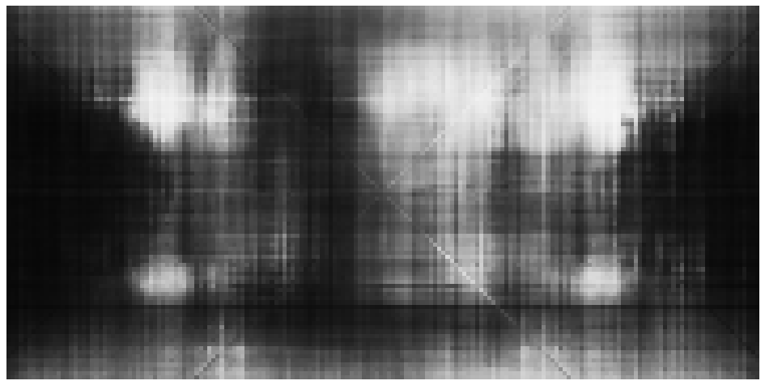<figcaption><i class="sw" style="background:var(--m-flash)"></i>Clef-flash · AUC 0.84 · coordinate as state</figcaption></figure><figure>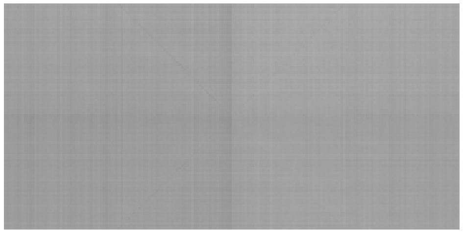<figcaption><i class="sw" style="background:var(--m-laya)"></i>Laya typed-decisions · AUC 0.69 · coordinate in question</figcaption></figure></div>
  <p class="note">P(Land) at every point. White = land, black = water, grey = unsure.</p>
</section>
<p>Jev's map has the clearest continents. Clef and Clef-flash find the large landmasses but blur them, with vertical streaks where single longitudes shift up or down. Both Clef maps show a faint X through 0°N 0°E, along the points where latitude and longitude have the same value; Jev shows the same X on a 1° grid. Laya returns about the same probability everywhere.</p>
<h3>Where the coordinate goes</h3>
<div class="tbl"><table><thead><tr><th>“Land or Water?”</th><th>In question: accuracy</th><th>AUC</th><th>ECE</th><th>As state: accuracy</th><th>AUC</th><th>ECE</th></tr></thead><tbody><tr><td><i class="sw" style="background:var(--m-jev)"></i>Jev 1.13</td><td>84.1%</td><td>0.93</td><td>0.094</td><td>83.3%</td><td>0.93</td><td>0.133</td></tr><tr><td><i class="sw" style="background:var(--m-clef)"></i>Clef</td><td>82.9%</td><td>0.87</td><td>0.076</td><td>83.8%</td><td>0.90</td><td>0.030</td></tr><tr><td><i class="sw" style="background:var(--m-flash)"></i>Clef-flash</td><td>73.3%</td><td>0.75</td><td>0.088</td><td>80.7%</td><td>0.84</td><td>0.031</td></tr><tr><td><i class="sw" style="background:var(--m-laya)"></i>Laya typed-decisions</td><td>29.0%</td><td>0.69</td><td>0.334</td><td>51.3%</td><td>0.63</td><td>0.221</td></tr></tbody></table></div>
<p>Clef-flash moves from 73.3% to 80.7%. Prompt format matters more for the Clef models than for Jev.</p>
<h3>Mirror images</h3>
<p>Clef-flash's map looks symmetric around the Greenwich meridian: land patches at 100°W and at 100°E. One way to measure this: correlate each map with its own mirror image. A model that ignores the E/W or N/S letter would score high.</p>
<div class="tbl"><table><thead><tr><th>Correlation with own mirror image</th><th>East–west</th><th>North–south</th></tr></thead><tbody><tr><td>Real world</td><td>0.30</td><td>-0.18</td></tr><tr><td><i class="sw" style="background:var(--m-jev)"></i>Jev 1.13</td><td>0.35</td><td>0.00</td></tr><tr><td><i class="sw" style="background:var(--m-clef)"></i>Clef</td><td>0.42</td><td>-0.01</td></tr><tr><td><i class="sw" style="background:var(--m-flash)"></i>Clef-flash</td><td>0.47</td><td>0.49</td></tr></tbody></table></div>
<p>All three maps are more symmetric than the real world. Clef-flash is close to symmetric north–south as well. This matches the names test below, where Clef-flash gets "east of Greenwich" right only 76% of the time.</p>

<h2>Seven ways to ask</h2>
<p>Every Choice answer includes a probability for each option, so P(land) can be read from questions that are not about land: add up the land options. Each model got all seven.</p>
<section class="wide">
  <div class="tbl"><table class="heat"><thead><tr><th></th><th>“Land or Water?” (Choice)</th><th>“…is over land” (yes/no)</th><th>“…is on land, not in an ocean, sea or lake” (yes/no)</th><th>“On land or in water?” (Choice)</th><th>Which continent or ocean?</th><th>Terrain / sea depth</th><th>Colour on a physical atlas</th></tr></thead><tbody><tr><th><i class="sw" style="background:var(--m-jev)"></i>Jev 1.13</th><td style="--s:0.69"><b>84.1%</b><small>AUC 0.93</small></td><td style="--s:0.47"><b>79.8%</b><small>AUC 0.90</small></td><td style="--s:0.40"><b>78.5%</b><small>AUC 0.91</small></td><td style="--s:0.70"><b>84.4%</b><small>AUC 0.92</small></td><td style="--s:0.33"><b>77.2%</b><small>AUC 0.93</small></td><td style="--s:0.82"><b>86.5%</b><small>AUC 0.93</small></td><td style="--s:0.72"><b>84.6%</b><small>AUC 0.92</small></td></tr><tr><th><i class="sw" style="background:var(--m-clef)"></i>Clef</th><td style="--s:0.63"><b>82.9%</b><small>AUC 0.87</small></td><td style="--s:0.69"><b>84.0%</b><small>AUC 0.88</small></td><td style="--s:0.67"><b>83.6%</b><small>AUC 0.88</small></td><td style="--s:0.60"><b>82.3%</b><small>AUC 0.87</small></td><td style="--s:0.65"><b>83.3%</b><small>AUC 0.88</small></td><td style="--s:0.66"><b>83.6%</b><small>AUC 0.89</small></td><td style="--s:0.47"><b>79.9%</b><small>AUC 0.85</small></td></tr><tr><th><i class="sw" style="background:var(--m-flash)"></i>Clef-flash</th><td style="--s:0.12"><b>73.3%</b><small>AUC 0.75</small></td><td style="--s:0.25"><b>75.7%</b><small>AUC 0.77</small></td><td style="--s:0.18"><b>74.4%</b><small>AUC 0.78</small></td><td style="--s:0.08"><b>72.5%</b><small>AUC 0.76</small></td><td style="--s:0.00"><b>61.1%</b><small>AUC 0.74</small></td><td style="--s:0.00"><b>61.7%</b><small>AUC 0.71</small></td><td style="--s:0.00"><b>63.2%</b><small>AUC 0.73</small></td></tr><tr><th><i class="sw" style="background:var(--m-laya)"></i>Laya typed-decisions</th><td style="--s:0.00"><b>29.0%</b><small>AUC 0.69</small></td><td style="--s:0.00"><b>71.0%</b><small>AUC 0.64</small></td><td style="--s:0.00"><b>29.3%</b><small>AUC 0.59</small></td><td style="--s:0.00"><b>54.6%</b><small>AUC 0.64</small></td><td style="--s:0.00"><b>71.0%</b><small>AUC 0.59</small></td><td style="--s:0.00"><b>29.0%</b><small>AUC 0.56</small></td><td style="--s:0.00"><b>71.0%</b><small>AUC 0.42</small></td></tr></tbody></table></div>
  <p class="note">Accuracy at P(land) ≥ 0.5 and AUC, coordinate in the question for every model. Shading starts at the all-water baseline (71.0%).</p>
</section>
<p>Jev's ranking (AUC) barely moves between questions; its accuracy at 0.5 does, from 77%–86%. The yes/no phrasings lean towards land and need a cutoff near 0.7. The terrain question is best calibrated and gives Jev's best land map. Clef's accuracy stays within 80%–84% for every question.</p>

<h3>Calibration</h3>
<section class="wide"><div class="chart2">
  <svg viewBox="0 0 360 330" role="img" aria-label="Calibration curves"><line x1="44" y1="286" x2="44" y2="14" class="g"/><line x1="44" y1="286" x2="346" y2="286" class="g"/><text x="44" y="302" class="tk" text-anchor="middle">0.0</text><text x="38" y="290" class="tk" text-anchor="end">0.0</text><line x1="104.4" y1="286" x2="104.4" y2="14" class="g"/><line x1="44" y1="231.6" x2="346" y2="231.6" class="g"/><text x="104.4" y="302" class="tk" text-anchor="middle">0.2</text><text x="38" y="235.6" class="tk" text-anchor="end">0.2</text><line x1="164.8" y1="286" x2="164.8" y2="14" class="g"/><line x1="44" y1="177.2" x2="346" y2="177.2" class="g"/><text x="164.8" y="302" class="tk" text-anchor="middle">0.4</text><text x="38" y="181.2" class="tk" text-anchor="end">0.4</text><line x1="225.2" y1="286" x2="225.2" y2="14" class="g"/><line x1="44" y1="122.80000000000001" x2="346" y2="122.80000000000001" class="g"/><text x="225.2" y="302" class="tk" text-anchor="middle">0.6</text><text x="38" y="126.80000000000001" class="tk" text-anchor="end">0.6</text><line x1="285.6" y1="286" x2="285.6" y2="14" class="g"/><line x1="44" y1="68.39999999999998" x2="346" y2="68.39999999999998" class="g"/><text x="285.6" y="302" class="tk" text-anchor="middle">0.8</text><text x="38" y="72.39999999999998" class="tk" text-anchor="end">0.8</text><line x1="346.0" y1="286" x2="346.0" y2="14" class="g"/><line x1="44" y1="14.0" x2="346" y2="14.0" class="g"/><text x="346.0" y="302" class="tk" text-anchor="middle">1.0</text><text x="38" y="18.0" class="tk" text-anchor="end">1.0</text><line x1="44" y1="286" x2="346" y2="14" class="diag"/><polyline points="56.7,284.4 86.0,270.0 116.9,246.0 148.2,235.7 178.6,200.4 208.2,187.8 238.5,165.8 269.1,135.2 301.1,116.1 332.6,40.8" fill="none" style="stroke:var(--m-jev)" stroke-width="2"/><circle cx="56.7" cy="284.4" r="3" style="fill:var(--m-jev)"/><circle cx="86.0" cy="270.0" r="3" style="fill:var(--m-jev)"/><circle cx="116.9" cy="246.0" r="3" style="fill:var(--m-jev)"/><circle cx="148.2" cy="235.7" r="3" style="fill:var(--m-jev)"/><circle cx="178.6" cy="200.4" r="3" style="fill:var(--m-jev)"/><circle cx="208.2" cy="187.8" r="3" style="fill:var(--m-jev)"/><circle cx="238.5" cy="165.8" r="3" style="fill:var(--m-jev)"/><circle cx="269.1" cy="135.2" r="3" style="fill:var(--m-jev)"/><circle cx="301.1" cy="116.1" r="3" style="fill:var(--m-jev)"/><circle cx="332.6" cy="40.8" r="3" style="fill:var(--m-jev)"/><polyline points="56.6,274.9 86.7,234.9 118.6,179.1 148.7,162.5 179.7,152.4 210.1,127.7 240.3,95.7 270.6,86.7 301.5,46.0 330.6,23.2" fill="none" style="stroke:var(--m-clef)" stroke-width="2"/><circle cx="56.6" cy="274.9" r="3" style="fill:var(--m-clef)"/><circle cx="86.7" cy="234.9" r="3" style="fill:var(--m-clef)"/><circle cx="118.6" cy="179.1" r="3" style="fill:var(--m-clef)"/><circle cx="148.7" cy="162.5" r="3" style="fill:var(--m-clef)"/><circle cx="179.7" cy="152.4" r="3" style="fill:var(--m-clef)"/><circle cx="210.1" cy="127.7" r="3" style="fill:var(--m-clef)"/><circle cx="240.3" cy="95.7" r="3" style="fill:var(--m-clef)"/><circle cx="270.6" cy="86.7" r="3" style="fill:var(--m-clef)"/><circle cx="301.5" cy="46.0" r="3" style="fill:var(--m-clef)"/><circle cx="330.6" cy="23.2" r="3" style="fill:var(--m-clef)"/><polyline points="62.1,278.8 88.1,251.1 118.9,217.4 148.1,192.2 179.4,195.5 209.7,125.3 240.4,127.5 270.8,94.0 300.7,50.4 323.9,16.0" fill="none" style="stroke:var(--m-flash)" stroke-width="2"/><circle cx="62.1" cy="278.8" r="3" style="fill:var(--m-flash)"/><circle cx="88.1" cy="251.1" r="3" style="fill:var(--m-flash)"/><circle cx="118.9" cy="217.4" r="3" style="fill:var(--m-flash)"/><circle cx="148.1" cy="192.2" r="3" style="fill:var(--m-flash)"/><circle cx="179.4" cy="195.5" r="3" style="fill:var(--m-flash)"/><circle cx="209.7" cy="125.3" r="3" style="fill:var(--m-flash)"/><circle cx="240.4" cy="127.5" r="3" style="fill:var(--m-flash)"/><circle cx="270.8" cy="94.0" r="3" style="fill:var(--m-flash)"/><circle cx="300.7" cy="50.4" r="3" style="fill:var(--m-flash)"/><circle cx="323.9" cy="16.0" r="3" style="fill:var(--m-flash)"/><polyline points="223.5,253.1 233.0,204.6" fill="none" style="stroke:var(--m-laya)" stroke-width="2"/><circle cx="223.5" cy="253.1" r="3" style="fill:var(--m-laya)"/><circle cx="233.0" cy="204.6" r="3" style="fill:var(--m-laya)"/><text x="195.0" y="324" class="ax" text-anchor="middle">Model’s P(Land)</text><text x="13" y="150.0" class="ax" text-anchor="middle" transform="rotate(-90 13 150.0)">Share that is land</text></svg>
  <div class="tbl" style="margin-top:0"><table><thead><tr><th>“Land or Water?”</th><th>ECE</th><th>Brier</th><th>Best cutoff</th><th>Accuracy there</th></tr></thead><tbody><tr><td><i class="sw" style="background:var(--m-jev)"></i>Jev 1.13</td><td>0.094</td><td>0.111</td><td>0.68</td><td>85.9%</td></tr><tr><td><i class="sw" style="background:var(--m-clef)"></i>Clef</td><td>0.030</td><td>0.114</td><td>0.45</td><td>83.9%</td></tr><tr><td><i class="sw" style="background:var(--m-flash)"></i>Clef-flash</td><td>0.031</td><td>0.139</td><td>0.51</td><td>80.7%</td></tr><tr><td><i class="sw" style="background:var(--m-laya)"></i>Laya typed-decisions</td><td>0.334</td><td>0.314</td><td>0.64</td><td>74.6%</td></tr></tbody></table>
  <p class="note">Dashed line: perfect calibration. ECE: expected calibration error, 10 bins, area-weighted. Lower is better for ECE and Brier.</p></div>
</div></section>
<p>Clef and Clef-flash are the best calibrated on this question. Jev's curve sits below the diagonal in the middle range: when it says 0.6, the point is land less than half the time.</p>

<h2>Names, not numbers</h2>
<p>A wrong map can mean the model lacks the knowledge, or that it cannot read the coordinate. To separate the two, the same models got the 500 largest cities in Natural Earth by name (state: <code>Lagos</code>), and every country, with five questions: continent, northern hemisphere, east of Greenwich, and which of six latitude and six longitude bands.</p>
<section class="wide">
  <div class="stack">
    <svg viewBox="0 0 560 216" role="img" aria-label="Continent accuracy by place name versus by coordinate"><line x1="150" y1="22" x2="150" y2="194" class="g"/><text x="150" y="210" class="tk" text-anchor="middle">0%</text><line x1="247.5" y1="22" x2="247.5" y2="194" class="g"/><text x="247.5" y="210" class="tk" text-anchor="middle">25%</text><line x1="345.0" y1="22" x2="345.0" y2="194" class="g"/><text x="345.0" y="210" class="tk" text-anchor="middle">50%</text><line x1="442.5" y1="22" x2="442.5" y2="194" class="g"/><text x="442.5" y="210" class="tk" text-anchor="middle">75%</text><line x1="540.0" y1="22" x2="540.0" y2="194" class="g"/><text x="540.0" y="210" class="tk" text-anchor="middle">100%</text><text x="140" y="44" class="lbl" text-anchor="end">Jev 1.13</text><line x1="509.73322454338887" y1="40" x2="535.3199999999999" y2="40" class="conn"/><circle cx="509.73322454338887" cy="40" r="6" class="hollow" style="stroke:var(--m-jev)"><title>coordinate: 92.2%</title></circle><circle cx="535.3199999999999" cy="40" r="6" style="fill:var(--m-jev)"><title>name: 98.8%</title></circle><text x="535.3199999999999" y="29" class="tk" text-anchor="middle">99%</text><text x="509.73322454338887" y="60" class="tk" text-anchor="middle">92%</text><text x="140" y="88" class="lbl" text-anchor="end">Clef</text><line x1="436.0873997988012" y1="84" x2="532.98" y2="84" class="conn"/><circle cx="436.0873997988012" cy="84" r="6" class="hollow" style="stroke:var(--m-clef)"><title>coordinate: 73.4%</title></circle><circle cx="532.98" cy="84" r="6" style="fill:var(--m-clef)"><title>name: 98.2%</title></circle><text x="532.98" y="73" class="tk" text-anchor="middle">98%</text><text x="436.0873997988012" y="104" class="tk" text-anchor="middle">73%</text><text x="140" y="132" class="lbl" text-anchor="end">Clef-flash</text><line x1="499.03288741210577" y1="128" x2="528.3" y2="128" class="conn"/><circle cx="499.03288741210577" cy="128" r="6" class="hollow" style="stroke:var(--m-flash)"><title>coordinate: 89.5%</title></circle><circle cx="528.3" cy="128" r="6" style="fill:var(--m-flash)"><title>name: 97.0%</title></circle><text x="528.3" y="117" class="tk" text-anchor="middle">97%</text><text x="499.03288741210577" y="148" class="tk" text-anchor="middle">89%</text><text x="140" y="176" class="lbl" text-anchor="end">Laya typed-decisions</text><line x1="150.0" y1="172" x2="325.5" y2="172" class="conn"/><circle cx="150.0" cy="172" r="6" class="hollow" style="stroke:var(--m-laya)"><title>coordinate: 0.0%</title></circle><circle cx="325.5" cy="172" r="6" style="fill:var(--m-laya)"><title>name: 45.0%</title></circle><text x="325.5" y="161" class="tk" text-anchor="middle">45%</text><text x="150.0" y="192" class="tk" text-anchor="middle">0%</text></svg>
    <p class="note" style="margin:0">Continent accuracy from a city name (filled) and from a coordinate on land (hollow).</p>
    <div class="tbl"><table><thead><tr><th></th><th>City → continent</th><th>Country → continent</th><th>North?</th><th>East of Greenwich?</th><th>Latitude band</th><th>Longitude band</th></tr></thead><tbody><tr><td><i class="sw" style="background:var(--m-jev)"></i>Jev 1.13</td><td>99%</td><td>99%</td><td>98%</td><td>81%</td><td>94%</td><td>81%</td></tr><tr><td><i class="sw" style="background:var(--m-clef)"></i>Clef</td><td>98%</td><td>99%</td><td>98%</td><td>98%</td><td>95%</td><td>89%</td></tr><tr><td><i class="sw" style="background:var(--m-flash)"></i>Clef-flash</td><td>97%</td><td>97%</td><td>94%</td><td>76%</td><td>78%</td><td>64%</td></tr><tr><td><i class="sw" style="background:var(--m-laya)"></i>Laya typed-decisions</td><td>45%</td><td>33%</td><td>17%</td><td>52%</td><td>3%</td><td>28%</td></tr><tr><td>laya-english</td><td>44%</td><td>25%</td><td>18%</td><td>59%</td><td>8%</td><td>29%</td></tr><tr><td>laya-multilingual</td><td>61%</td><td>68%</td><td>52%</td><td>51%</td><td>1%</td><td>9%</td></tr><tr class='base'><td>Most common answer</td><td>47%</td><td>–</td><td>86%</td><td>70%</td><td>49%</td><td>32%</td></tr></tbody></table></div>
  </div>
</section>
<p>Jev and Clef know where cities are. They name the continent of 98.8% and 98.2% of cities and place most in the right latitude band. The weak step is reading a coordinate, and it costs Clef more than Jev: 98% by name, 73.4% by coordinate. Jev has one gap by name: east or west of Greenwich, 81% (Clef 98%).</p>
<p>Laya's typed-decisions and English checkpoints are at or below the most-common-answer baseline on every task. The multilingual checkpoint gets continents right 61–68% of the time (baseline 47%) and nothing else. The encoders (322–421M parameters) are trained to classify text, and hold little knowledge about the world.</p>
<p>To rule out a setup error, Laya also got its own README example and questions whose answer is in the text. All three checkpoints route the README's double-billing ticket to "billing" (0.81–1.00). "The point is in the Sahara desert, in southern Algeria" comes back as land in Africa; "…in the middle of the Pacific Ocean…" as water; "Our office is in Lima, Peru" as South America. Laya reads the text correctly. It cannot supply facts the text does not contain.</p>

<h2>Continents</h2>
<p>"Which continent or ocean is this location in?", with seven continents and five oceans as options.</p>
<section class="wide"><div class="grid2"><figure>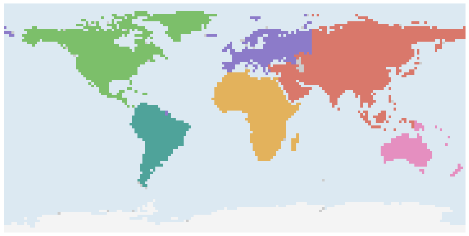<figcaption>Truth</figcaption></figure><figure>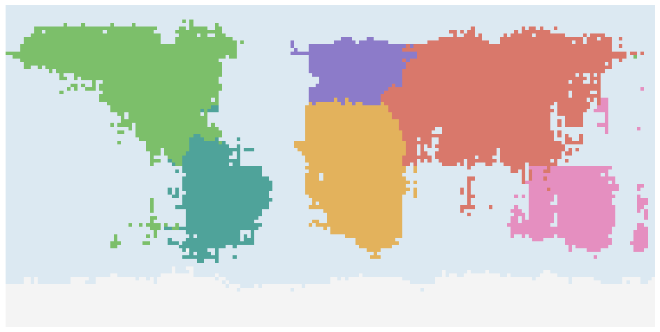<figcaption><i class="sw" style="background:var(--m-jev)"></i>Jev 1.13 · 92.2%</figcaption></figure><figure>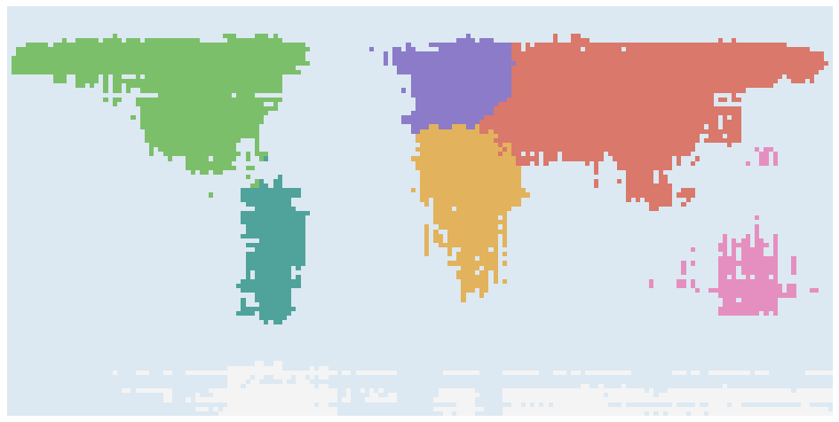<figcaption><i class="sw" style="background:var(--m-clef)"></i>Clef · 73.4%</figcaption></figure><figure>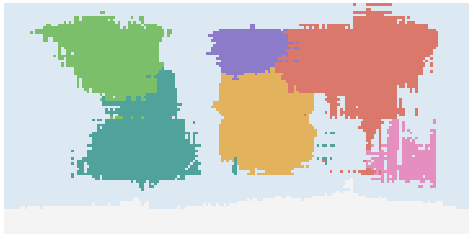<figcaption><i class="sw" style="background:var(--m-flash)"></i>Clef-flash · 89.5%</figcaption></figure></div></section>
<div class="tbl"><table><thead><tr><th>Right continent</th><th>Jev</th><th>Clef</th><th>Clef-flash</th><th>Laya</th></tr></thead><tbody><tr><td>Africa</td><td>93%</td><td>76%</td><td>97%</td><td>0%</td></tr><tr><td>Antarctica</td><td>100%</td><td>32%</td><td>99%</td><td>0%</td></tr><tr><td>Asia</td><td>93%</td><td>85%</td><td>91%</td><td>0%</td></tr><tr><td>Europe</td><td>72%</td><td>64%</td><td>69%</td><td>0%</td></tr><tr><td>North America</td><td>88%</td><td>82%</td><td>83%</td><td>0%</td></tr><tr><td>Oceania</td><td>94%</td><td>53%</td><td>68%</td><td>0%</td></tr><tr><td>South America</td><td>98%</td><td>72%</td><td>97%</td><td>0%</td></tr><tr class='tot'><td>All land</td><td>92.2%</td><td>73.4%</td><td>89.5%</td><td>0.0%</td></tr><tr><td>Ocean points called an ocean</td><td>69.6%</td><td>90.0%</td><td>63.8%</td><td>74.5%</td></tr></tbody></table></div>
<p>All three draw continents as blocks. Clef-flash gains the most from one point per request: 70.4% with the coordinate in the question, 89.5% as the state. Part of that comes from oversized continents that also cover much of the ocean; Clef is the opposite, cautious on land and right about the ocean 90% of the time. Laya answers "Pacific Ocean", "Oceania" or "Atlantic Ocean" regardless of the coordinate.</p>

<h2>Countries</h2>
<p>One Choice over all 242 Natural Earth countries and territories plus "Ocean". Not run on Laya: its question budget truncates options beyond about 20.</p>
<section class="wide"><div class="grid2"><figure>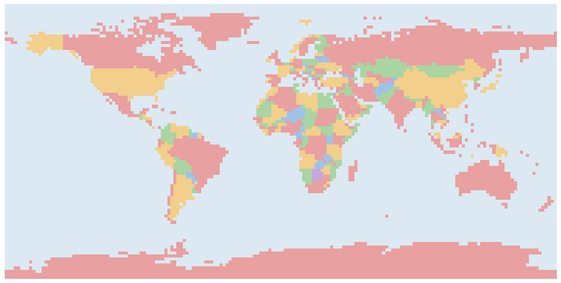<figcaption>Truth</figcaption></figure><figure>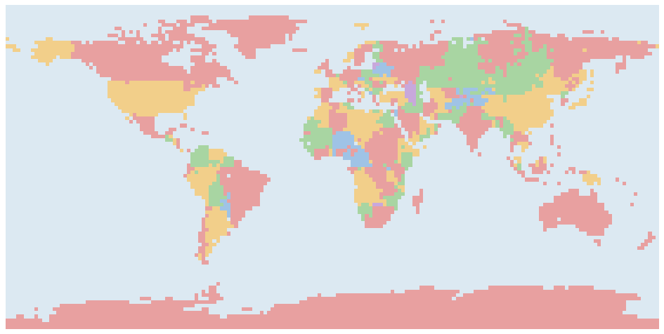<figcaption><i class="sw" style="background:var(--m-jev)"></i>Jev 1.13 · 75.3% of land</figcaption></figure><figure>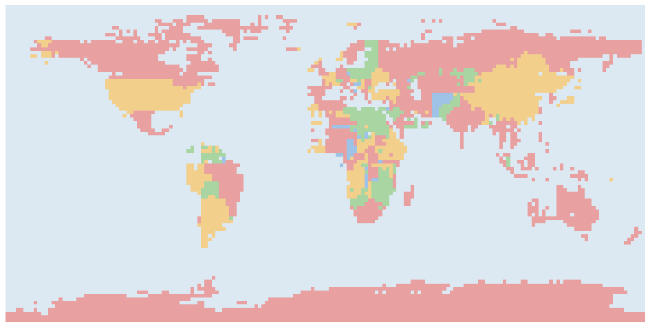<figcaption><i class="sw" style="background:var(--m-clef)"></i>Clef · 63.3% of land</figcaption></figure><figure>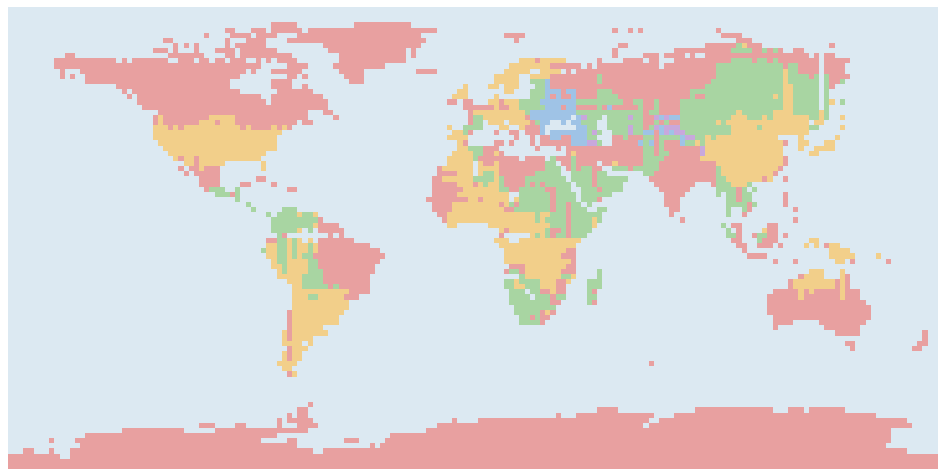<figcaption><i class="sw" style="background:var(--m-flash)"></i>Clef-flash · 49.6% of land</figcaption></figure></div><p class="note">Answers drawn on true land points only.</p></section>
<section class="wide"><div class="chart2">
  <svg viewBox="0 0 360 300" role="img" aria-label="Political accuracy against coverage when keeping only confident answers"><line x1="44" y1="256.0" x2="44" y2="14.0" class="g"/><text x="44" y="272.0" class="tk" text-anchor="middle">0%</text><line x1="119.5" y1="256.0" x2="119.5" y2="14.0" class="g"/><text x="119.5" y="272.0" class="tk" text-anchor="middle">25%</text><line x1="195.0" y1="256.0" x2="195.0" y2="14.0" class="g"/><text x="195.0" y="272.0" class="tk" text-anchor="middle">50%</text><line x1="270.5" y1="256.0" x2="270.5" y2="14.0" class="g"/><text x="270.5" y="272.0" class="tk" text-anchor="middle">75%</text><line x1="346.0" y1="256.0" x2="346.0" y2="14.0" class="g"/><text x="346.0" y="272.0" class="tk" text-anchor="middle">100%</text><line x1="44" y1="256.0" x2="346" y2="256.0" class="g"/><text x="38" y="260.0" class="tk" text-anchor="end">30%</text><line x1="44" y1="186.85714285714283" x2="346" y2="186.85714285714283" class="g"/><text x="38" y="190.85714285714283" class="tk" text-anchor="end">50%</text><line x1="44" y1="117.71428571428572" x2="346" y2="117.71428571428572" class="g"/><text x="38" y="121.71428571428572" class="tk" text-anchor="end">70%</text><line x1="44" y1="48.57142857142853" x2="346" y2="48.57142857142853" class="g"/><text x="38" y="52.57142857142853" class="tk" text-anchor="end">90%</text><line x1="44" y1="14.0" x2="346" y2="14.0" class="g"/><text x="38" y="18.0" class="tk" text-anchor="end">100%</text><polyline points="52.9,14.0 65.5,14.0 72.8,14.0 74.3,14.0 82.9,14.8 93.6,15.3 105.8,15.7 120.7,16.0 137.4,17.8 153.7,19.4 170.1,21.7 186.9,26.0 204.3,32.9 222.7,40.8 241.1,49.8 259.9,59.3 279.7,67.6 300.1,77.5 321.7,87.6 346.0,99.5" fill="none" style="stroke:var(--m-jev)" stroke-width="2"/><polyline points="64.2,28.3 77.6,46.1 85.5,46.7 92.6,48.2 100.2,53.5 108.2,56.8 119.0,58.9 130.0,59.0 141.6,61.6 153.9,64.3 165.6,67.6 179.1,69.4 193.8,75.7 210.1,81.7 228.6,88.1 249.3,95.3 272.3,105.0 295.9,116.4 320.7,129.1 346.0,140.9" fill="none" style="stroke:var(--m-clef)" stroke-width="2"/><polyline points="56.1,52.3 59.8,52.6 64.1,50.1 69.3,49.6 76.0,47.2 83.9,46.1 93.4,50.2 103.8,51.4 118.7,58.8 136.9,73.6 154.7,91.2 172.0,106.3 190.0,115.9 208.9,121.9 229.7,131.8 251.7,141.8 273.9,151.1 297.0,161.5 321.1,174.8 346.0,188.3" fill="none" style="stroke:var(--m-flash)" stroke-width="2"/><text x="195.0" y="294" class="ax" text-anchor="middle">Land points answered (highest confidence first)</text><text x="13" y="135.0" class="ax" text-anchor="middle" transform="rotate(-90 13 135.0)">Right country</text></svg>
  <div class="tbl" style="margin-top:0"><table><thead><tr><th></th><th>Right country</th><th>In top 3</th><th>Most confident 50%</th><th>Ocean called ocean</th><th>Countries never chosen</th></tr></thead><tbody><tr><td><i class="sw" style="background:var(--m-jev)"></i>Jev 1.13</td><td>75.3%</td><td>92.6%</td><td>96.5%</td><td>33.1%</td><td>27</td></tr><tr><td><i class="sw" style="background:var(--m-clef)"></i>Clef</td><td>63.3%</td><td>89.5%</td><td>82.1%</td><td>79.0%</td><td>55</td></tr><tr><td><i class="sw" style="background:var(--m-flash)"></i>Clef-flash</td><td>49.6%</td><td>70.4%</td><td>70.5%</td><td>23.9%</td><td>82</td></tr></tbody></table>
  <p class="note">Left: accuracy when only the most confident answers are kept.</p></div>
</div></section>
<p>All three rank their own answers usefully: accuracy rises as low-confidence answers are dropped. Jev's confidence separates much better. Its most confident half is 96.5% right, Clef's 82.1%. Clef's confidence values run much lower (median 0.12 against Jev's 0.62), so a cutoff tuned on Jev does not transfer. On open sea, Jev usually names the nearest coastal country; Clef answers "Ocean" more often (79% against 33%). Some countries are never the answer at any point, even when they are often second or third: 27 for Jev, including Mali and Chad.</p>
<div class="tbl"><table><thead><tr><th>Right country, by country</th><th>Jev</th><th>Clef</th><th>Clef-flash</th></tr></thead><tbody><tr><td>Russia</td><td>63%</td><td>81%</td><td>41%</td></tr><tr><td>Canada</td><td>93%</td><td>91%</td><td>81%</td></tr><tr><td>USA</td><td>95%</td><td>83%</td><td>69%</td></tr><tr><td>China</td><td>76%</td><td>82%</td><td>66%</td></tr><tr><td>Brazil</td><td>76%</td><td>52%</td><td>58%</td></tr><tr><td>Australia</td><td>99%</td><td>79%</td><td>74%</td></tr><tr><td>India</td><td>96%</td><td>76%</td><td>76%</td></tr><tr><td>Argentina</td><td>81%</td><td>88%</td><td>90%</td></tr><tr><td>Kazakhstan</td><td>76%</td><td>24%</td><td>50%</td></tr><tr><td>Algeria</td><td>52%</td><td>39%</td><td>0%</td></tr><tr><td>DR Congo</td><td>59%</td><td>41%</td><td>0%</td></tr><tr><td>Saudi Arabia</td><td>68%</td><td>28%</td><td>16%</td></tr></tbody></table></div>

<h2>Physical map</h2>
<p>Eight elevation and depth bands, asked two ways: by terrain ("Mountains: land 1,500 to 3,000 m") and by the colour a physical atlas uses ("brown").</p>
<section class="wide"><div class="grid2"><figure>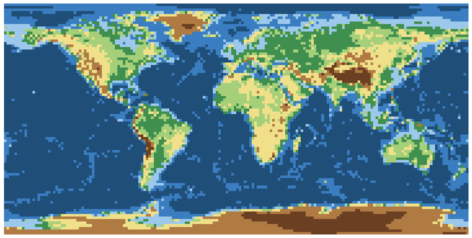<figcaption>Truth (ETOPO1)</figcaption></figure><figure>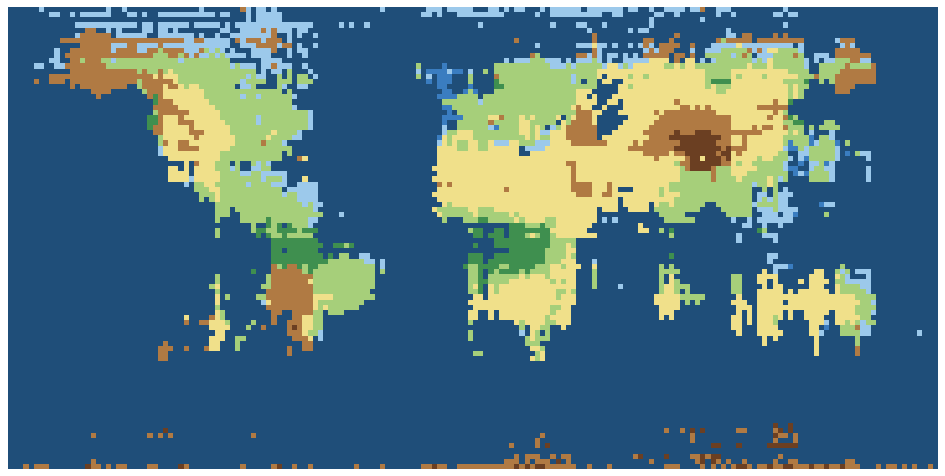<figcaption><i class="sw" style="background:var(--m-jev)"></i>Jev 1.13</figcaption></figure><figure>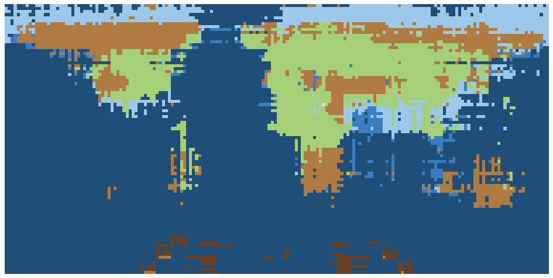<figcaption><i class="sw" style="background:var(--m-clef)"></i>Clef</figcaption></figure><figure>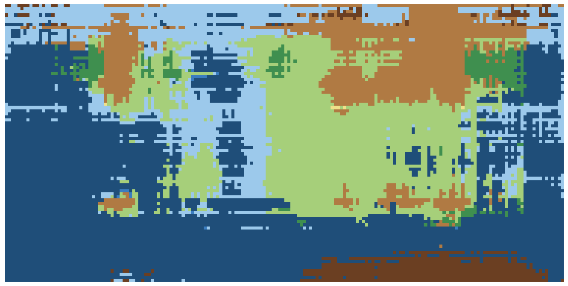<figcaption><i class="sw" style="background:var(--m-flash)"></i>Clef-flash</figcaption></figure></div>
<div class="legend"><span><i style="background:#1f4e79"></i>deep ocean</span><span><i style="background:#3a7dc0"></i>ocean</span><span><i style="background:#9cc9eb"></i>shallow sea</span><span><i style="background:#3f8f4f"></i>lowland</span><span><i style="background:#a6cf7a"></i>hills</span><span><i style="background:#f0e08a"></i>upland</span><span><i style="background:#b07a43"></i>mountains</span><span><i style="background:#6b3f22"></i>high mountains</span></div>
<p class="note">Atlas-colour version.</p></section>
<div class="tbl"><table><thead><tr><th></th><th>Terrain: exact</th><th>within one band</th><th>Colour: exact</th><th>within one band</th></tr></thead><tbody><tr><td><i class="sw" style="background:var(--m-jev)"></i>Jev 1.13</td><td>49.8%</td><td>83.5%</td><td>56.7%</td><td>77.4%</td></tr><tr><td><i class="sw" style="background:var(--m-clef)"></i>Clef</td><td>58.8%</td><td>77.6%</td><td>54.7%</td><td>76.8%</td></tr><tr><td><i class="sw" style="background:var(--m-flash)"></i>Clef-flash</td><td>50.4%</td><td>70.3%</td><td>39.2%</td><td>60.0%</td></tr><tr><td><i class="sw" style="background:var(--m-laya)"></i>Laya typed-decisions</td><td>8.2%</td><td>21.3%</td><td>12.2%</td><td>71.0%</td></tr></tbody></table></div>
<p>Exact bands are hard for every model. Clef gets the most exact terrain bands (58.8%); Jev is closest within one band (83.5%) and places the Himalaya, Andes and Rockies.</p>

<h2>Cost, speed, determinism</h2>
<div class="tbl"><table><thead><tr><th></th><th>Access</th><th>$ / M input tokens</th><th>Tokens per question</th><th>One 2° map</th><th>Latency</th><th>Changed on repeat (mean |Δp|)</th></tr></thead><tbody><tr><td><i class="sw" style="background:var(--m-jev)"></i>Jev 1.13</td><td>Hosted API</td><td>$0.042</td><td>59</td><td>$0.04</td><td>0.33 s / 100 q</td><td>17 of 648 (0.022)</td></tr><tr><td><i class="sw" style="background:var(--m-clef)"></i>Clef</td><td>Hosted API</td><td>$0.24</td><td>87</td><td>$0.34</td><td>1.46 s / 64 q</td><td>0 of 648 (0.000)</td></tr><tr><td><i class="sw" style="background:var(--m-flash)"></i>Clef-flash</td><td>Hosted API</td><td>$0.24</td><td>87</td><td>$0.34</td><td>0.89 s / 64 q</td><td>0 of 648 (0.000)</td></tr><tr><td><i class="sw" style="background:var(--m-laya)"></i>Laya typed-decisions</td><td>Open weights (Apache-2.0)</td><td>own GPU</td><td>–</td><td>&lt; $0.01 GPU</td><td>16,200 q in 6–30 s on one L4</td><td>–</td></tr></tbody></table></div>
<p>The country question costs the most: 243 options in every question. One 2° country map cost $1.33 on Jev and $14.62 on each Clef model, whose tokenizer counts the option list at twice the tokens. Repeat runs used the 648 points of the 10° grid; Jev's largest change was 0.20.</p>

<h2>Method notes</h2>
<ul>
  <li>The land mask counts large lakes (Caspian Sea, Lake Victoria) as land.</li>
  <li>Coordinate format was chosen on Jev and then checked on Clef and Clef-flash on the 10° grid: the same format wins for both. Where the coordinate goes does differ by model, and each section uses each model's better setting.</li>
  <li>Claude scores are read from the published chart; that eval read P(Land) from token log-probabilities.</li>
  <li>Laya was also run with the coordinate as the state instead of in the question. Results were the same: near chance.</li>
  <li>OpenAI has announced a decision API but has not published it, so it is not included.</li>
</ul>

<!-- CONTENT END -->
<footer>Code, raw answers and journal: <a href="https://github.com/move38studios/decision-map-bench">github.com/move38studios/decision-map-bench</a>. Total API spend for the study: $80.</footer>
</main>
